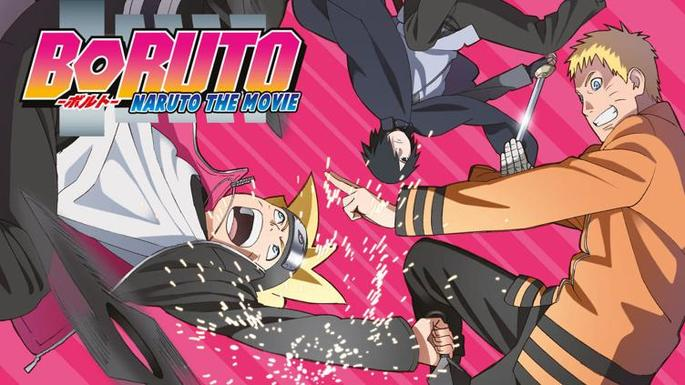
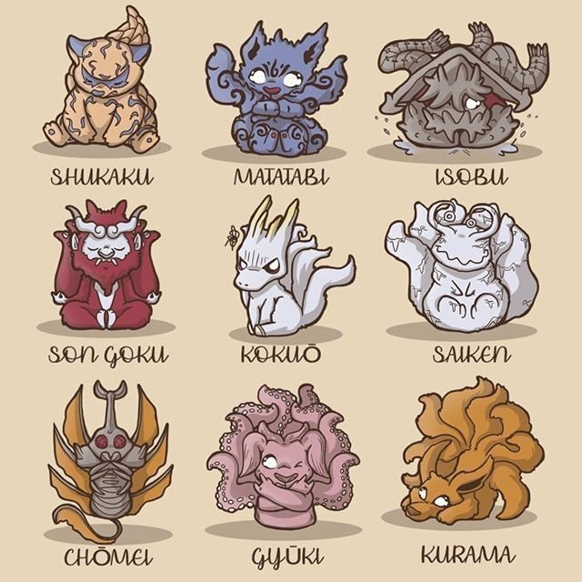

HISTORIA
PRODUCTOS
PERSOANJES
CONTACTANOS
PEDIDOS Biografia
 |
clanes de konoha
|
clanes de kiri
|
clanes de kumo
|
||
clanes de iwua
|
clanes de suna
|
clanes de uzu
|
Peliculas Naruto
Informacion de la pelicula batalla ninja en la tierra de la nieve 2004
|
Informacion de la pelicula las ruinas fantasmas en lo profundo de la tierra 2005
|
Informacion de la pelicula panico animal en la isla de la luna creciente 2006
|
Informacion de la pelicula Naruto shipudden lamuerte de naruto 2007
|
Informacion de la pelicula Naruto shippuden lazos 2008
|
Informacion de la pelicula Naruto shippuden los hederedos de la voluntad de fuego 2009
|
Informacion de la pelicula Naruto shippuden la torre perida 2010
|
Informacion de la pelicula Naruto shippuden prisión de sangre 2011
|
Informacion de la pelicula Naruto camino ninja 2012
|
Informacion the last:Naruto the movie 2014
|
Informacion de la pelicula Boruto:Naruto the movie 2015
|
| tierra de la nieve | fantasmas en loprofundo de la tierra | panico animal | muerte de naruto | lazos | voluntad de fuego |  torre perdida torre perdida |
prision de sangre |  camino ninja camino ninja |
the last | boruto |
| Ninja Stickman Fight: Ultimate 1.6 idioma español | Naruto Senki 2.1.4 idioma ingles | Naruto X Boruto Ninja Voltage 10.2.0 idioma ingles | Epic Ninja 1.0.0 idioma ingles | Naruto Mobile 1.53.68.9 idioma inles | Split Crowd Run Android 1.1.9 |
| Ultimate Fight: Survival 1.0.3 idioma ingles | Last Storm: Ninja Heroes Impact 12.0.0 idioma ingles | Anime Crystal 6.3 idioma español | |||
| Stickman Ninja 2.5 idioma español | Stickman Shinobi 2.9 idioma español | Manga Run 2.14 idioma ingle | |||
| Naruto X Boruto Ninja Tribes 1.2.1 idioma ingles | Arashi Adventure 1.2 idioma español | Naruto: SlugfestX Android 1.1.13 idioma ingles | Nine Tails Legend 1.0.1 idioma ingles |
|  | |
 |
|
Actividad10 Actividad16 Actividad17 Practica uno |